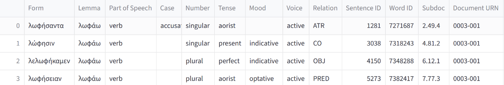

Smith 06
The verbatim claim: “λελωφήκαμεν: rather rare, used by Thuc. with reference to sicknesses and grave misfortunes.”
Our interpretation: 1) rather rare = the odds of picking a verb with this lemma (λωφάω) from all verbs in the Perseus corpus is not very likely and 2) λελωφήκαμεν usually occurs in a context when Thucydides is discussing “sicknesses and grave misfortunes.”
0) Requirements
To run and tweak this analysis, you will need the following:
this notebook
all_verb_lemmata.csv (counts of every verb’s lemma in the Perseus corpus)
the pandas library
1) Rarity
First, let’s import some necessary libraries and look at all_verb_lemmata.csv, which we can see is a list of verb lemmas and the number of times they occur in the Perseus corpus.
import pandas as pd
lemmata = pd.read_csv('all_verb_lemmata.csv')
lemmata.sort_values('count', ascending=False)[:20]| lemma | count | |
|---|---|---|
| 1050 | εἰμί | 209433 |
| 11096 | λέγω | 78161 |
| 45165 | γίγνομαι | 65809 |
| 21008 | ἔχω | 60845 |
| 25204 | ποιέω | 36583 |
| 49363 | φημί | 35067 |
| 49264 | δέω | 23717 |
| 42928 | δοκέω | 18658 |
| 14293 | ὁράω | 17522 |
| 42549 | λαμβάνω | 16627 |
| 45350 | καλέω | 14470 |
| 28383 | δίδωμι | 13962 |
| 50211 | δύναμαι | 13013 |
| 18255 | χράω | 12790 |
| 50271 | βούλομαι | 12462 |
| 16735 | οἶδα | 12020 |
| 13209 | ἔρχομαι | 11611 |
| 20480 | φαίνω | 11441 |
| 12879 | φέρω | 10231 |
| 42300 | ὑπάρχω | 10169 |
These are the 20 most common lemmata in our lemma group. To evaluate how unlikely it is to pick λωφάω from this group, we should have other odds to compare it against. Calculating the same odds for the most common lemma (εἰμί), the 20th most common lemma (ὑπάρχω), and maybe one least common lemma should be a good set to help us see how rare or not rare λωφάω is. Let’s pick the least common lemma:
lemmata.sort_values('count', ascending=False)[-5:]| lemma | count | |
|---|---|---|
| 50471 | διατμάζω | 1 |
| 50470 | ὑποπέτομαι | 1 |
| 50469 | ἀνταναμένω | 1 |
| 50467 | ἀπκαλύπτω | 1 |
| 50464 | διάπλομαι | 1 |
διάπλομαι will do nicely, a single instance in a large set of lemmata is definitely rare.
Odds are calculated the following way: undesirable outcomes / desirable outcomes = x where we then say there is a 1 in x chance of the desirable outcome. In our case, let’s say that desirable outcomes are the counts associated with each lemma, and the undesirable outcomes can be calculated by subtracting each desirable outcome from the sum of everything in the count column.
total_count = int(lemmata['count'].sum())
desirable_outcomes, undesirable_outcomes = [],[]
verbs = ["εἰμί", "ὑπάρχω", "λωφάω", "διάπλομαι"]
for i in verbs:
desirable_outcomes.extend(lemmata[lemmata['lemma']== i]['count'].values)
desirable_outcomes = [int(i) for i in desirable_outcomes]
for d in desirable_outcomes:
undesirable_outcomes.append(total_count-d)
for e in range(4):
odds = undesirable_outcomes[e]/desirable_outcomes[e]
print("The odds of picking",verbs[e],"from the lemmata group is 1 in",odds,".",sep=" ")
The odds of picking εἰμί from the lemmata group is 1 in 9.224367697545278 .
The odds of picking ὑπάρχω from the lemmata group is 1 in 209.57331104336708 .
The odds of picking λωφάω from the lemmata group is 1 in 41178.230769230766 .
The odds of picking διάπλομαι from the lemmata group is 1 in 2141319.0 .
The odds of picking λωφάω are about 200 times less than picking ὑπάρχω, and since 1 in ~40,000 is less than 1 in 10,000, which can also be thought of as the desired outcome representing .01% of a set, one could state that the occurrence of λωφάω is in fact uncommon enough to be rare. Now that we have established that λωφάω is rather rare, let us look at the second piece of this claim.
2) Sicknesses and Grave Misfortunes
First, we will look up where λωφάω occurs in Thucydides using Scaife’s Text Search. As you can see, there are four instances in the History, which we will look at one by one.
For each of these four instances, we will take a closer look and assess whether each instance supports or invalidates this assumption. Each passage is accompanied by translations from Charles Foster’s early 1900s editions.
Instance 1: 2.49.4
λύγξ τε τοῖς πλέοσιν ἐνέπιπτε κενή, σπασμὸν ἐνδιδοῦσα ἰσχυρόν, τοῖς μὲν μετὰ ταῦτα λωφήσαντα, τοῖς δὲ καὶ πολλῷ ὕστερον.
...and in most cases ineffectual retching followed producing violent convulsions, which sometimes abated directly, sometimes not until long afterwards.
This passage documents symptoms of the Athenian Plague, which was happening at the same time as the Peloponessian War. λωφήσαντα is certainly used in the context of a sickness.
Instance 2: 4.81.2
τό τε γὰρ παραυτίκα ἑαυτὸν παρασχὼν δίκαιον καὶ μέτριον ἐς τὰς πόλεις ἀπέστησε τὰ πολλά, τὰ δὲ προδοσίᾳ εἷλε τῶν χωρίων, ὥστε τοῖς Λακεδαιμονίοις γίγνεσθαι ξυμβαίνειν τε βουλομένοις, ὅπερ ἐποίησαν, ἀνταπόδοσιν καὶ ἀποδοχὴν χωρίων καὶ τοῦ πολέμου ἀπὸ τῆς Πελοποννήσου λώφησιν· ἔς τε τὸν χρόνῳ ὕστερον μετὰ τὰ ἐκ Σικελίας πόλεμον ἡ τότε Βρασίδου ἀρετὴ καὶ ξύνεσις, τῶν μὲν πείρᾳ αἰσθομένων, τῶν δὲ ἀκοῇ νομισάντων, μάλιστα ἐπιθυμίαν ἐνεποίει τοῖς Ἀθηναίων ξυμμάχοις ἐς τοὺς Λακεδαιμονίους.
For, at the present crisis, by showing himself just and moderate in his dealings with the cities he caused most of the places to revolt, and secured possession of others by the treachery of their inhabitants, so that when the Lacedaemonians wished to make terms with Athens, as they did ultimately, they had places to offer in exchange for places they wished to recover and were able to secure for the Peloponnesus a respite from the war; and in the later part of the war, after the events in Sicily, it was the virtue and tact which Brasidas had displayed at this time—qualities of which some had had experience, while others knew of them by report—that did most to inspire in the allies of the Athenians a sentiment favourable to the Lacedaemonians.
Foster translates λώφησιν as respite, as it is actually from the noun λώφησις and not the verb λωφάω. Technically, this does not count as an instance of λωφάω and will not be assessed, though it should be known that this word was mislabeled as a form of λωφάω in the treebanks being searched over for this part of the analysis.
Instance 3: 6.12.1
‘καὶ μεμνῆσθαι χρὴ ἡμᾶς ὅτι νεωστὶ ἀπὸ νόσου μεγάλης καὶ πολέμου βραχύ τι λελωφήκαμεν, ὥστε καὶ χρήμασι καὶ τοῖς σώμασιν ηὐξῆσθαι·
And we should remember that we have but lately recovered somewhat from a great pestilence and war, so as to recruit our strength both in money and in men;
Nicias is purposely invoking the Athenian recovery from the Athenian Plague, using the λελωφήκαμεν this comment and its claim are anchored on, in the context of a sickness.
Instance 4: 7.77.3
‘καὶ μεμνῆσθαι χρὴ ἡμᾶς ὅτι νεωστὶ ἀπὸ νόσου μεγάλης καὶ πολέμου βραχύ τι λελωφήκαμεν, ὥστε καὶ χρήμασι καὶ τοῖς σώμασιν ηὐξῆσθαι·
And we should remember that we have but lately recovered somewhat from a great pestilence and war, so as to recruit our strength both in money and in men;
Nicias is purposely invoking the Athenian recovery from the Athenian Plague, using the λελωφήκαμεν this comment and its claim are anchored on, in the context of a sickness.
Smith says that Thucydides usually uses this in the context of grave misfortunes and sicknesses, leading the uncritical reader to assume that he uses this lemma more than three times, and that there may be some instances that occur not in the context of sickness but in the former context, along with a handful of instances that do not mention sickness or misfortune. The analysis in this notebook shows that Thucydides uses this word thrice, always in the context of the Athenian Plague. While this could validate Smith’s comment, it would be remiss not to remark that the wording of the claim misleads the author to believe that this is a more frequent and less specific pattern than it is. Combined with earlier confirmation that λωφάω is in fact rare, we find here that these claims hold up, even if the wording on one is somewhat misleading.
οἳ πρῶτοι Θήβης ἕδος ἔκτισαν ἑπταπύλοιο,
καὶ τοὺς μὲν πόλεμός τε κακὸς καὶ φύλοπις αἰνή,
οὐδʼ ὅσʼ ἐς Ὀρχομενὸν ποτινίσεται, οὐδʼ ὅσα Θήβας
Αἰγυπτίας, ὅθι πλεῖστα δόμοις ἐν κτήματα κεῖται,
αἵ θʼ ἑκατόμπυλοί εἰσι, διηκόσιοι δʼ ἀνʼ ἑκάστας
ἆρʼ εἰμὶ μάντις; ἆρα δυστυχεστάτην
δὲ τὴν στρατείαν ἐκείνην μεγίστην μὲν γενέσθαι τῶν πρὸ αὑτῆς,
“Adam, the goodliest man of men since born, | His sons, the fairest of her daughters Eve.”
Milton P. L. 4. 322
Goethe Hermann und Dorothea 5. 101 “Von ihren Schwestern die beste.”οἳ πρῶτοι Θήβης ἕδος ἔκτισαν ἑπταπύλοιο,
εἰπέ μοι, ὦ χρυσέας τέκνον Ἐλπίδος, ἄμβροτε Φάμα.
ὦ χρυσέα θύγατερ Διός,
ῥεέθροισί τε Δίρκας ἔφανεν καὶ παρ᾽ Εὐρώτᾳ
ἰὼ Διρκαῖαι κρῆναι
εἰ γὰρ ἀναγκασθείη ὁ Πέρσης μένειν ἐν τῇ Εὐρώπῃ,
etc. Cp. Aesch. Theb. 90 “ὁ λεύκασπις λεώς” (Dind. “λευκοπρεπής”): Eur. Phoen. 1099 “λεύκασπιν εἰσορῶμεν Ἀργείων στρατόν”. The round shield, painted white, which the Argive soldier carried on his left arm, is the “λευκῆς χιόνος πτέρυξ” of 114. The choice of white as the Argive colour may have been prompted by a popular association of “Ἄργος” with “ἀργός”.
The words “τὸν λεύκασπιν Ἀργόθεν” answer metrically to 123 “πευκάενθ᾽ Ἥφαιστον ἑλεῖν”. Instead of “Ἀργόθεν” (¯˘¯) we therefore require ¯˘˘¯. The short final of “λεύκασπιν” is legitimate, the metre being Glyconic (see Analysis Metr.). In the antistrophic verse, the H of “Ἥφαιστον” is ‘irrational,’ i.e. is a long syllable doing duty for a short: and Nauck is incorrect in saying that the metre ‘requires’ (though it admits) a choriambus beginning with a consonant. The simplest remedy is to read Ἀργόθεν ἐκ ι βάντα φῶτα, and to suppose that, after the loss of “ἐκ, βάντα” and “φῶτα” were accidentally transposed. Cp. O. C. 1088 where “σθένει 'πινικείῳ” is certainly the right order, but the MSS. reverse it. (See also above on v. 29.) Dindorf reads “ἐκ φῶτα βάντα”, assuming tmesis: but tmesis of “ἐκ” in Soph. occurs elsewhere only before “μέν” (Tr. 1053)εἰ γὰρ ἀναγκασθείη ὁ Πέρσης μένειν ἐν τῇ Εὐρώπῃ,
γῆς Ἀπίας, a name for the Peloponnesus (Aesch. Ag. 256), from the mythical king “Ἆπις”, who crossed over from Naupactus, “"before Pelops had come to Olympia,"” as Paus. says, and purged the land of monsters. The Sicyon myth made him son of Telchin (Paus. 2.5.7); Aesch. calls him “ἰατρόμαντις παῖς Ἀπόλλωνος” (Suppl. 263). Distinguish 1685 “ἀπίαν γᾶν”, “"a far land"” (“ἀπό”).
θέλει τόδʼ ἄγχιστον Ἀ-
πίας γαίας μονόφρουρον ἕρκος.
οὗτος ὁ Ἆπις ἐς τοσόνδε ηὐξήθη δυνάμεως, πρὶν ἢ Πέλοπα ἐς Ὀλυμπίαν ἀφικέσθαι, ὡς τὴν ἐντὸς Ἰσθμοῦ χώραν Ἀπίαν ἀπ᾽ ἐκείνου καλεῖσθαι. Ἄπιδος δὲ ἦν Θελξίων, Θελξίονος δὲ Αἴγυρος, τοῦ δὲ Θουρίμαχος, Θουριμάχου δὲ Λεύκιππος: Λευκίππῳ δὲ ἄρρενες παῖδες οὐκ ἐγένοντο, θυγάτηρ δὲ Καλχινία. ταύτῃ τῇ Καλχινίᾳ Ποσειδῶνα συγγενέσθαι φασὶ καὶ τὸν τεχθέντα ὑπ᾽ αὐτῆς ἔθρεψεν ὁ Λεύκιππος καὶ τελευτῶν παρέδωκέν οἱ τὴν ἀρχήν:
This Apis reached such a height of power before Pelops came to Olympia that all the territory south of the Isthmus was called after him Apia. Apis begat Thelxion, Thelxion Aegyrus, the Thurimachus, and Thurimachus Leucippus. Leucippus had no male issue, only a daughter Calchinia. There is a story that this Calchinia mated with Poseidon; her child was reared by Leucippus, who at his death handed over to him the kingdom. His name was Peratus.σάγη, Arc. 104. 25, τὸ μέντοι σαγή τὸ πλῆθος τινὲς μὲν ὀξύνουσι, τινὲς βαρύνουσι, cf.
Schol. Eurip. Rhes. 207; E. M. 707.23Metareference 1: Schol. Eurip. Rhes. 207
λέξον, τίς ἔσται τοῦδε σώματος σαγή;
Σάγµα, παρὰ ᾿Ἀριστοφανει αποθήκη τῶν ὅπλων· παρα τὸ σαγὴ, τουτέστιν ἁσπίς.
ἐξυπτιάζων ὄμμα, Πολυνείκους βίαν,
ἐπωνύμῳ δὲ κάρτα, Πολυνείκει λέγω,
οἳ δῆτ᾽ ὀρθῶς κατ᾽ ἐπωνυμίαν
καὶ πολυνεικεῖς
ὤλοντ᾽ ἀσεβεῖ διανοίᾳ.
χρυσοῦ καναχῆς ὑπεροπλίαις, ‘in the haughty pride of clanging gold.’ “ὑπεροπλίαις” seems a certain correction of “ὑπεροπτίας” (see cr. n.), and has justly won its way with recent edd. The word is fitting, since “ὑπεροπλία” is prop. ‘overweening confidence in arms’; and Soph. has used the epic plur. with the epic “ι_”, Il. 1.205 “ᾗς ὑπεροπλίῃσι”: so too Theocr. 25. 138 “σθένεϊ ᾧ ι ἠδ᾽ ὑπεροπλίῃ Φαέθων”
ἤριπε δὲ πρηνής, ψυχὴ δὲ μελέων ἐξέπτη.
ἀνέπταν φόβῳ. τί μʼ οὐκ ἀνταίαν
The round shield, painted white, which the Argive soldier carried on his left arm, is the “λευκῆς χιόνος πτέρυξ” of 114. The choice of white as the Argive colour may have been prompted by a popular association of “Ἄργος” with “ἀργός”.
στολίδος κροκόεσσαν ἀνεῖσα τρυφάν,
σι γάλακτος παρὰ μαστοῖς
ἱππόκομοι κόρυθες
Ἀρτέμιδος αἴγλας, ξὺν αἷς Λύκιʼ ὄρεα διᾴσσει·
ἐσθῆτι σὺν τοιᾷδε, τῆς ὁ δυσφιλὴς
οὐρανίαν δι᾽ αἰθέρα τεκνωθέντες called into a life that permeates the heavenly ether （the highest heaven）: the metaphor of τεκνωθέντες being qualified by its meaning in this particular application to νόμοι, viz. that they are revealed as operative; which allows the poet to indicate the sphere throughout which they operate by δι᾽ αἰθέρα, instead of the verbally appropriate ἐν αἰθέρι: much as if he had said δι᾽ αἰθέρα ἐνεργοὶ ἀναφανέντες. So, again, when he calls Olympus, not Zeus, their πατήρ, the metaphor is halffused with the direct notion of “source.” Cp. Aristot. Rh. 1.13.2 quoted on 865, which continues （illustrating τὸ φύσει δίκαιον）: καὶ ὡς Ἐμπεδοκλῆς λέγει περὶ τοῦ μὴ κτείνειν τὸ ἔμψυχον: τοῦτο γὰρ οὐ τισὶ μὲν δίκαιον τισὶ δ᾽ οὐ δίκαιον, Ἀλλὰ τὸ μὲν πάντων νόμιμον διά τ᾽ εὐρυμέδοντος ι αἰθέρος ἠνεκέως τέταται διά τ᾽ ἀπλέτου αὖ γῆς （so Scaliger rightly amended αὐγῆς: Emped. 438）: where the special reference of Empedocles is to a principle of life common to gods, men, and irrational animals （“πνεῦμα τὸ διὰ παντὸς τοῦ κόσμου διῆκον ψυχῆς τρόπον,” Sext. Emp. Adv. Math. 9.127: cp. Cope ad loc.）.
ἀδελφόν· οὐ γὰρ δὴ προδοῦσʼ ἁλώσομαι.
πρὶν τῆσδε κοίτης ἐμπελασθῆναί ποτε.
κυρῶ τ᾽ ἐγὼ = ἐγώ τε κυρῶ, answered by κοινῶν τε, κ.τ.λ. For τε so placed cp. Soph. El. 249 “ἔρροι τ᾽ ἂν αἰδὼς ι ἁπάντων τ᾽ εὐσέβεια θνατῶν.”
It is true that in class. Greek στέγω usually means either (1) "cover, conceal," as
El. 1118 or (2) "keep out," as Aesch. Theb. 216 “πύργον στέγειν εὔχεσθε πολέμιον δόρυ”. But the first sense — "cover" — might easily pass into "protect," and Xen. Cyr. 7.1.33 has. Wakefield's στέφουσιν ("girdle") is specious; we have στεφάνωμα or στεφάνη πύργων (Ant. 122, Eur. Hec. 910), “Βαβυλῶνα...τείχεσιν ἐστεφάνωσε” (Dionys. Periegetes 1006), “ὅπλοισιν Μεγάλη πόλις ἐστεφάνωται” (Paus. 9. 15). But it does not follow that πύργοι πόλιν στέφουσιν could stand. στέφω never occurs as = "to be set around," but either as (1) "to set around" — ἄνθη περὶ κεφαλὴν στέφεις, or (2) "to crown" — ἄνθεσι κεφαλὴν στέφεις,—sometimes in the fig. sense of "honouring," as with libations or offerings (Ant. 431 etc.).ἄγγος ἴσθι σῶμα τοὐκείνου στέγον.
αἵ τε ἀσπίδες πολὺ μᾶλλον τῶν θωράκων καὶ τῶν γέρρων καὶ στεγάζουσι τὰ σώματα
χοαῖσι τρισπόνδοισι τὸν νέκυν στέφει.
αἱ μὲν ἀπʼ ἀελίου δυσμᾶν,
πῶς ὅδʼ ἂν ἀέλιον ἕτερον ἢ τανῦν ἴδοι,
ἀκτὶς Ἀελίου, κατίδετ’ ἴδετε τὰν